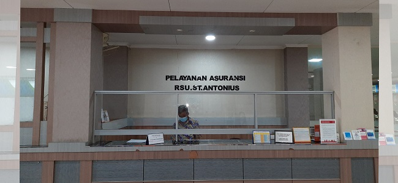
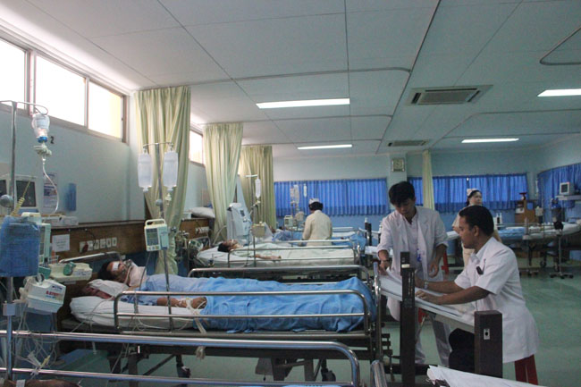

Selamat Datang di website pribadi Hasyim Asy'ari, website ini mengenai tentang informasi rumah sakit Antonius
Profil
Rumah Sakit Umum Santo Antonius pertama kali mulai dibangun pada bulan April 1928, diprakarsai oleh Mgr. Pacificus Bos, Ofm. Cap. D.D, pimpinan umat Katolik pada waktu itu yang memandang perlu adanya rumah sakit di Kota Pontianak, dengan mengambil nama pelindung Santo Antonius, yang juga dikenal sebagai santo pelindung barang - barang yang hilang atau dicuri. Maksudnya adalah agar mereka yang menderita sakit, menemukan kembali kesehatannya setelah berobat.
Pada awal mula berdirinya, rumah sakit ini diberi status Rumah Sakit Swasta Bersubsidi, dimana penyelenggaraan maupun rumah sakit ditangani oleh missi Katolik dengan mendapat subsidi dari pemerintah. Pada permulaannya, rumah sakit ini belum mempunyai dokter ahli, hanya ada dokter umum dan diberi tanggung jawab sebagai pimpinan. Tenaga lainnya adalah para suster dari Fransiskanes, pastor dan tenaga lainnya.
Pada tahun 1949 pengelolaan RS diserahkan kepada pemerintah dan diganti dengan nama Rumah Sakit Umum Sei Jawi Pontianak, lalu pada tahun 1990 satus kepemilikan RS dikembalikan kepada Keuskupan Agung Pontianak dan dikelola oleh Yayasan Dharma Insan dengan nama Rumah Sakit Umum St. Antonius
Seiring perjalanan waktu, Rumah Sakit Umum Santo Antonius telah berkembang dari rumah sakit yang sangat sederhana menjadi rumah sakit yang lengkap dan modern. Pada bulan Desember 2002, RSU Antonius secara bertahap pindah ke gedung baru, dan pada awal bulan Januari 2003, proses perpindahannya selesai.
Visi Dan Misi
Visi
Menjadi Rumah Sakit pilihan utama masyarakat Kalimantan Barat dengan memberikan layanan kesehatan yang Profesional dan terpercaya.
1. RSU Santo Antonius, dahulu dikenal dengan nama R.S. Sungai Jawi, diresmikan pada tanggal 31 Desember 1928 sebagai karya kerasulan bidang kesehatan dari para rohaniwan Ordo Kapusin, suster SFIC dan bruder MTB.
2.RSU Santo Antonius memberikan layanan kesehatan dengan keahlian terbaik sehingga menjadi terpercaya. Profesional adalah sikap dan perilaku pembelajar, berintegritas dan jujur.
Misi
Menyediakan layanan kesehatan berdasarkan kasih bagi masyarakat Kalimantan Barat dengan
1. Meningkatkan profesionalitas sumber daya manusia.
2. Mengembangkan sarana dan prasarana rumah sakit
3. Mengefisienkan pembiayaan rumah sakit
4. Mewujudkan semangat cinta kasih dalam pelayanan
5. Meningkatkan mutu layanan dan mengutamakan keselamatan pasien
Sarana Umum
Rumah Sakit Umum Santo Antonius menyediakan berbagai macam sarana umum pendukung, yang diharapkan bisa mendukung proses penyembuhan pasien, ataupun bisa memudahkan para penjenguk atau para keluarga yang menginap untuk menemani pasien.
Bank dan ATM
Di dalam RSU Santo Antonius terdapat kantor cabang Bank Mandiri dan Bank Kalbar yang siap untuk melayani nasabahnya.
Tersedia juga atm Bank Bri, Bank Mandiri dan Bank Kalbar.
Kapel
Memberikan fasilitas pelayanan rohani kepada umat yang ingin didoakan secara Katolik.
Aula St. Leopoldo
Tempat pertemuan dan penyelenggaraan kegiatan
Hostel / Penginapan
Merupakan fasilitas penginapan bagi pengantar / penjenguk yang datang dari luar kota, sehingga tidak perlu repot-repot lagi mencari hotel / penginapan di luar yang letaknya mungkin jauh.
Kantin
Adanya kantin yang pilihan menunya cukup beragam memungkinkan para pengunjung untuk memilih makanan yang sesuai dengan selera.
Koperasi
Koperasi memudahkan pasien ataupun pengunjung untuk memperoleh barang kebutuhan sehari - hari.
Pos Satpam
Keamanan 24 jam memberikan rasa aman kepada pasien dan pengunjung, terutama dalam mencegah hilangnya kendaraan bermotor ataupun tindakan kriminal lainnya.
Parkir
Parkir motor ataupun mobil yang luas serta diawasi oleh petugas keamanan dapat memberikan rasa aman kepada pasien ataupun pengunjung RSU Santo Antonius.
Layanan Asuransi Kesehatan
RSU Santo Antonius bekerja sama dengan perusahaan asuransi tertentu untuk melayani Rawat Inap dan Rawat Jalan. Tersedia loket pelayanan Asuransi di RSU Santo Antonius yang bertujuan untuk memberikan informasi dan pengurusan administrasi terkait layanan yang diberikan.

Taman
Menjadi tempat untuk menghilangkan kebosanan bagi pasien ataupun pengunjung.
ICU/ICCU
ICU (Intensive Care Unit) dilengkapi 7 tempat tidur elektrik dan ICCU (Intensive Care Cardiac Unit) dilengkapi 9 tempat tidur elektrik. Unit ini menangani kasus - kasus tindakan pasca operasi atau kasus - kasus intensif lainnya. Unit ini dilengkapi dengan peralatan untuk perawatan intensif yang lengkap seperti Ventilator, Layar monitor vital sign, shiring pump, defibrilator, dll.

Medical Check Up
Medical Check Up adalah pemeriksaan kesehatan secara menyeluruh. Melalui pemeriksaan ini, diharapkan suatu penyakit atau gangguan kesehatan bisa dideteksi sejak dini. Tes ini sekaligus berguna untuk merencanakan metode penanganan dan pengobatan yang tepat sebelum penyakit berkembang.
Saat medical check up, pasien akan menjalani sejumlah tahapan pemeriksaan, yang meliputi konsultasi mengenai keluhan yang sedang dirasakan, pencatatan dan pemeriksaan berkaitan dengan riwayat kesehatan, serta pemeriksaan tanda vital tubuh dan kondisi fisik secara umum.
Indikasi Medical Check Up
Medical check up dapat membantu dokter untuk mengetahui kondisi kesehatan pasien secara menyeluruh.
Berikut ini adalah tujuan dilakukannya medical check up:
1. Mengetahui kondisi kesehatan terkini
2. Mendeteksi penyakit yang tidak disertai gejala
3. Mengetahui risiko-risiko penyakit yang mungkin bisa muncul di kemudian hari
4. Mendorong pasien untuk beralih ke gaya hidup sehat
5. Memastikan kondisi kesehatan pasien sebelum melakukan pengobatan tertentu
Walau tidak diwajibkan, medical check up dianjurkan menjadi pemeriksaan kesehatan rutin, khususnya pada kondisi tertentu. Pasien dapat berkonsultasi kepada dokter mengenai kondisi kesehatan kapan saja, tanpa harus menunggu timbulnya penyakit. Medical check up disarankan untuk dilakukan setiap 1 tahun, terutama bagi seseorang yang berusia di atas 50 tahun. Sementara, untuk pasien yang memiliki kondisi khusus, seperti sedang mengonsumsi obat, medical check up dilakukan sesuai jadwal yang ditentukan oleh dokter.
Hal-hal yang perlu diperhatikan sebelum Medical Check Up
Sebelum menjalani medical check up, penting untuk menginformasikan kepada dokter hal-hal berikut ini:
1. Keluhan atau gejala yang sedang dialami
2.Obat-obatan yang sedang digunakan, termasuk suplemen dan produk herbal
3. Riwayat kesehatan, riwayat operasi, hasil tes, serta perawatan dokter lainnya
4. Diet yang sedang dijalani
5. Perangkat yang ditanam di dalam tubuh, seperti alat pacu jantung
6. Jika Anda memiliki perangkat yang diimplan di dalam tubuh, bawa salinan bagian depan dan belakang, kartu perangkat Anda sebagai bukti.
7. Disarankan juga untuk mempersiapkan pertanyaan yang ingin ditanyakan pada dokter agar tidak ada yang terlupa
Hubungi Saya
Nama : Hasyim Asy'ari
Email : arikseno5@gmail.com
Instagram : @hasyimw_